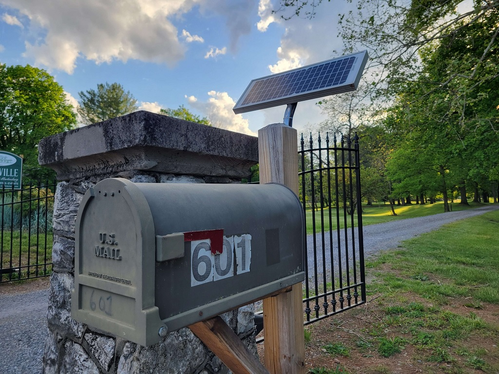
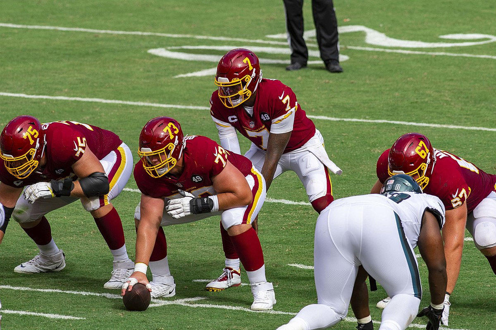
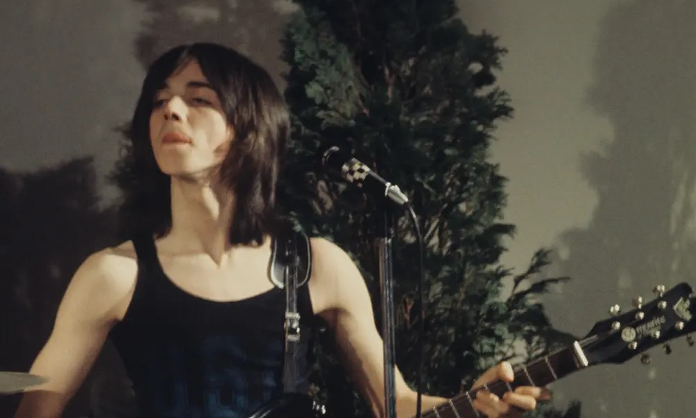

(10/15/2025 1:52PM) i love my friends so much. last night was exactly what i needed after the last couple days i've had. also, its very rewarding and fun to make people kaugh, but especially so if i find them to also be very funny themselves.
(10/14/2025 10:46AM) fuck my life
(10/11/2025 8:33PM) it really does feel good to do work on this site. i just gotta keep it up, and remind myself why it feels good to do it. i deserve to feel good.
(10/8/2025 10:27PM) i've neglected updating my site for too long lol. i tried to use social media more again to ramble but it just ain't doing it for me like i used to. plus my ADHD having ass is so bad at maintaining projects like these consistently. but i'm gonna attempt to do better at it!
(5/9/2025 6:52PM) anytime i have to use my gf's iphone i hate it so much. no buttons at the bottom that do basic functions, its all swiping and shit. i can't even click in the middle of words while texting, i gotta long press and it still misses where i wanted the cursor anyways. iphones are such bullshit lmao.
(5/8/2025 9:42AM) when the youtube video buffers so bad it goes to 144p, i weigh my options if i should just go full amish or not.
(5/5/2025 2:34PM) next project to complete for this site is to get a working RSS feed going for my blog section. shouldn't be the hardest thing to figure out, but we'll see eventually how easy it is to actually maintain lol.
(5/5/2025 2:33PM) had my blood drawn today and didn't have a panic attack thankfully. valiums are no fucking joke. idk how people find those things addicting, i felt like i was out of my body for a solid 2 hours afterwards. nothing a good nap can't solve though.
(5/4/2025 8:49AM) nearly 8 hour shift today when i've been getting non-stop 5 hour shifts the past few weeks. and worse yet, i still barely got any more hours this week. god i can't wait to have a real job schedule, this shit sucks.
(5/2/2025 8:09PM) solar powered mailbox
(5/2/2025 12:41PM) YAY IT WORKS. so long neocities, thank you for everything to get me started. o7
(5/2/2025 12:38PM) testing if this is actually connected or not.
(5/1/2025 2:06AM) i hate how some people in my past i just cannot get rid of in my mind. and how guilty i feel for not really wanting to get rid of them in my mind in the first place. i've had some people really fuck me up in the past, and end up becoming people i never wanted to be in contact with ever again. some of them, worse than others. almost everyone i knew and loved in my past i just... don't associate with anymore. for various reasons from person to person, and a lot of them really causing me lasting harm. yet somehow, i cannot find it in me to hate them. well, minus a few. some of them can get curbstomped for life. but some of them, i almost find myself wanting to reach out again. rekindle what used to be. but, i know its a bad idea on many levels. i can't keep living in the past like this, wondering "what if". maybe it wouldn't hurt as bad, if i just handled things differently in the moment. as bad as some of them were, they were still good friends of mine at one point. and a specific few, i feel like i didn't give a chance to make repairs. and i'm here now, bearing that agony without closure. and potentially, they feel the same. but, maybe they don't. maybe they moved on completely. maybe they don't check my socials every month hoping to see a life update and make sure i'm okay. maybe they don't look at old videos from years ago and reminisce. maybe they are better, maybe they are worse. i'll never know. i need to move past, but the past hurts me in the present almost more now than ever. but maybe, if you do still check up on me, and you see this, i hope it finds you well anyways. i still wish you all the best, as i hope you've wished the same to me.
(4/30/2025 8:45PM) the internet truly is a beautiful place. corporations might have ruined a large portion of it, but there's still so much to the internet that is still alive and intact for the world to see. and having a website to call your own truly is a freeing feeling.
(4/30/2025 6:53PM) as president, my first executive order is banning all canker sores that are, and will be. effective immediately.
(4/29/2025 11:24PM) its nothing a little bit of mental spiral and crying my eyes out can't solve. (yes i'm doing fine, just been a tough night mentally.)
(4/27/2025 11:52AM) its been a bit since i updated this site. i'll make a blog post about whats up but damn i really need to keep up with this site more.
(1/30/2025 11:08AM) i love my gf so much :3
(1/24/2025 9:27PM) also yes i'm still alive, just haven't had a lot of time to update the site or do much new. the current state of affairs in america have also been depressing me so meh.
(1/24/2025 9:26PM) bought some audio cables to hook up my gf's bluetooth speaker to my DVD player so i can play all my CDs finally. was just gonna try and thrift an old CD hifi but this is a lot cheaper and easier lol.
(1/19/2025 7:32PM) i wonder if rgiii fucks with trans girls
(1/19/2025 12:13PM) this shit is my subway surfers.
(1/18/2025 11:33PM) we are now yet again one step closer to a Baltimore/Washington super bowl.
(1/18/2025 11:27PM) WE'RE GOING TO THE NFC CHAMPIONSHIP GAME!!!!! WHY NOT US!!!!! DC IS BACK THE FUCK UP!!!!!!!!
(1/17/2025 8:40PM) today has been good. i finally got cell service once again, i did laundry, and i'm about to eat some good food. maybe life isn't so shit after all.
(1/14/2025 12:27PM) i cannot believe that we have an actual winning franchise with a long-term future ahead of us, and oldhead fucks are STILL hung up on the redskins name. get the fuck over it, its not your name to choose and it never was! the redskins name will never come back and being a bitter asshole about it says a lot about you as a person. personally i don't give a fuck what we are named, i just like that we are finally WINNING. HTTC
(1/14/2025 12:09PM) i wish i didn't miss the people that i miss. some of them are genuinely awful people, or were awful to me at the time that we we're friends. my sentimental mind comes to a fault when i can feel for people who did me and my current friends wrong. and i especially hate having these people in my dreams too. i just want to move on entirely, but i have a really hard time with it.
(1/13/2025 8:40PM) even with washington doing so well, i still look at these uniforms and weep. why must we be so good and our uniforms be so ass. we need to go back so bad.
(1/12/2025 11:10PM) WE'RE GOING TO DETROIT!!! FIRST PLAYOFF WIN SINCE 05!!! SUPER BOWL HERE WE COME!!
(1/12/2025 7:41PM) eagles fans are the worst in the NFL besides cowboys fans
(1/12/2025 12:13AM) spent my midnight revamping the CSS of my site to make it a little less boring looking. not planning on changing the formatting much beyond this though. this is about the most CSS i can handle until start breaking shit.
(1/11/2025 10:05AM) looking for music advice on internet forums is basically like looking for bad news. rarely any actual help and more so just assholes putting themselves on moral pedastals. r/edmproduction is the absolute worst offender i've seen so far.
(1/10/2025 9:08PM) jimmy mcculloch is one of the craziest what-if stories in rock. dude wrote some pretty awesome tunes while he was in Wings, like my favorite Wino Junko. plus like, look at him. he was so hot. rest in peace.
(1/10/2025 12:15PM) remember when you brush your teeth today to swallow just a little bit of toothpaste, just for good luck (:
(1/10/2025 1:25AM) congrats ringo starr on being my 50th album ranked on my list. and its an album that literally just dropped. first album of 2025 i've heard. its pretty good too, gotta say.
(1/9/2025 4:33PM): i have had no time to update this in a while. its been a crazy fucking week lol. i'll write a blog post soon about it all cause its wack.
(1/4/2025 6:48PM): missed my morning estrogen dose, so now i'm doubling up to 4 pills at once right now under my tongue to catch up. i am now 4x the girl i was this morning.
(1/3/2025 7:11PM): its really weird seeing people constantly make the distinction of cis men and trans men when they say "all men suck." i really don't like how we keep up the narrative that trans men/women are not just men/women. maybe it comes from an honest place, but i think its still incredibly dangerous.
(1/3/2025 6:56PM): honestly can't tell with some people if they call me abbey and refer to me as a girl as a performative act, or if they really believe it. i hate that i even have to wonder this.
(1/2/2025 9:25PM): music is really frustrating to get a full understanding of when actually trying to apply what you learn to an actual song you're trying to make. making my first song feels so far away because i just cannot shake the feeling that i have no good base to work off of.
(1/1/2025 6:34PM): milk is a weird word. milk.
(1/1/2025 4:52PM): i love when dryers don't do the thing they are literally designed to do.
(1/1/2025 2:32PM): i think the shit that metallica gets for the black album is proof that men don't like feeling emotion and change.
(1/1/2025 12:00AM): happy new year
(12/31/2024 8:22PM): why the FUCK are we setting off fireworks at 8 when we have a whole FOUR HOURS till the new year??? god people are so dumb.
(12/31/2024 7:30PM): people who get in my way at work and look at me as if i'm the one in their way are the worst. i'm literally being paid to be in the way, you aren't. lick my taint about it.
(12/31/2024 10:35AM): abbey2k1.xyz is finally active! my website has a domain name and i love it so much. now it feels like i'm running a real website :3
(12/30/2024 9:10PM): the world with paul mccartney will be better than the world without him. what a fantastic musician, gosh.
(12/30/2024 12:01AM): commanders to the playoffs yippeeeeeee
(12/29/2024 8:14PM): carrie underwood makes one (1) good song and she makes this dogshit intro for sunday night football. what a shame.
(12/29/2024 6:28PM): i've been a lot more lazy today than i wanted to be, but thats mainly cause i only slept like 3 hours last night before work at 6AM. work went fine but i took a three hour nap a little while after getting home and my brain is dead lmao. might make some music stuff here soon to try and make the day a little but more productive.
(12/28/2024 8:49PM): garbage time on youtube is proof that australians are the funniest fuckin people ever lmao.
(12/28/2024 7:22PM): i need to stop using twitter for porn because every third post is someone's shitty opinion discourse i didn't ask to see. everything is fucked, but twitter has all the good videos on it of the niche-ish stuff i'm into. the world is cruel to pretty girls like me i suppose.
(12/28/2024 6:49PM): gifcities is a miracle and must be protected at all costs. donate to the internet archive today.
(12/28/2024 9:33AM): god there is really no better feeling in the morning than taking a massive piss immediately after getting out of bed.
(12/27/2024 6:23PM): i wish slide phones were still a thing. i remember having my dad's old samsung rant and loving it, including the built in voice memo feature. phones nowadays do mostly the same shit in a different shell, i miss when phones were devices that i could have fun with. yeah i can get apps n stuff on my current one and watch 2K/4K content at full resolution, but i am just less and less interested in that shit these days. i wanna have a phone that's functional but fun as well. i kinda miss the blackberry days honestly. physical keyboards are the shit.
(12/27/2024 5:33PM): if my parents are that disappointed in me being trans, they'd REALLY hate learning what a therian is.
(12/27/2024 4:29PM): i can't believe there are professional places in the world that will explicitly mention "girldick." i'm all for dismantling professional, unnecessary language that only makes things more confusing, but that is so blatant that its comical to me.
(12/27/2024 3:15PM): poopoo peepee
(12/26/2024 11:12PM): does anyone even set their ringtones anymore? i can't even remember the last time i tried to change mine to anything that wasn't already default on my phone. i feel like we are well past the ringtone generation.
(12/26/2024 8:58PM): steely dan is probably one of the greatest recorded music projects of all time. and i say project specifically because to call them a "band" is a bit misleading. steely dan was only ever two guys for the longest time, walter becker and donald fagen. and that of course changed when walter passed away. but all other "members" were all incredibly talented session musicians who made their mark with beautifully laid down tracks. steely dan hardly has a terrible song as far as pure sonic quality goes. that's also why i say they are the best "recorded" music project of all time, to emphasize that they're technical mastery of the editing console and ear for musicianship is the thing that made them the best of their generation. i don't think any group can boast a better sound than steely dan in that era. all of this to say, steely dan fucking rules.
(12/26/2024 2:38PM): i farted